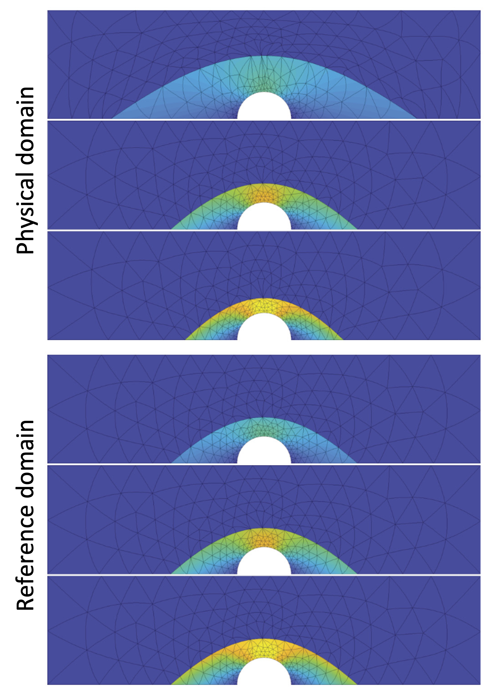
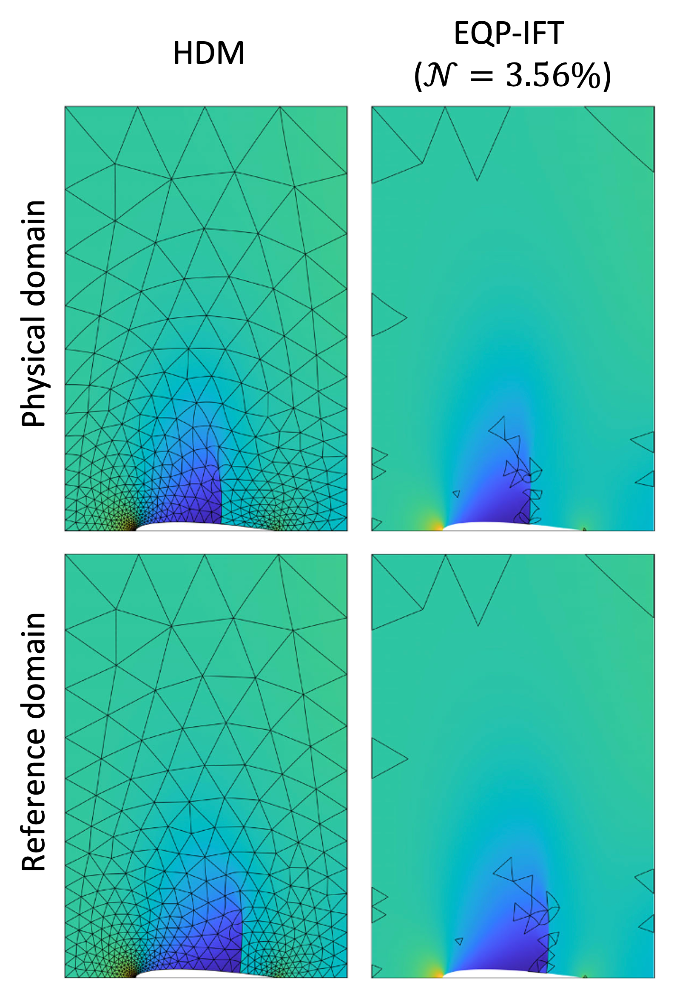
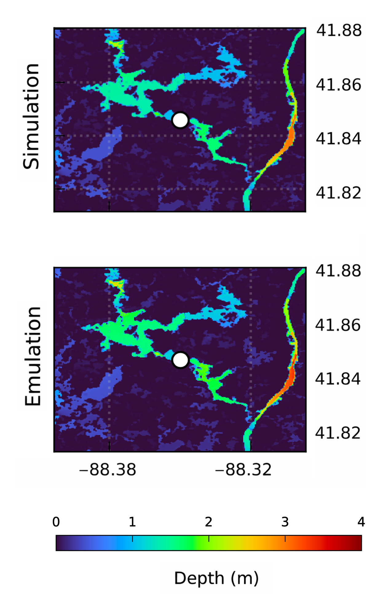

Research
PDE-constrained optimization · Model reduction · Physics-informed AI · Environmental hazards

Optimization-Based Model Reduction for PDEs
Classical reduced-order models often fail for transport- or convection-dominated PDEs because the main features of the solution, such as sharp fronts or waves, move across the domain and cannot be captured efficiently by a fixed linear basis. This work addresses that difficulty by formulating model reduction as a small nonlinear optimization problem. The key idea is to optimize not only the reduced coefficients of the solution, but also a low-dimensional domain transformation that aligns the moving features with a common reference configuration. After this alignment, the solution becomes much easier to approximate with only a few basis modes.
For each new parameter, the method solves a compact least-squares problem using a robust Levenberg–Marquardt strategy, while a distortion penalty keeps the map smooth, stable, and boundary-preserving. Offline, the reduced basis and the family of admissible maps are learned from training snapshots; online, only a low-dimensional problem is solved. In this way, the method preserves the minimum-residual structure of projection-based ROMs while overcoming their weakness for moving features. The result is a reduced model that is more accurate, uses fewer modes, and remains computationally efficient for challenging advection-dominated PDEs.

Hyperreduction with Selecting Optimal Mesh Elements
Even after feature alignment, ROM-IFT is still costly because the nonlinear residual must normally be assembled over all mesh elements. To remove this bottleneck, the method introduces a hyperreduction step that selects only the most informative elements and assigns them nonnegative weights. The full residual is viewed as a weighted sum of local elemental contributions, and the weights are learned offline through a sparsity-promoting optimization problem. The goal is to keep the weighted residual as close as possible to the original one, while matching key global quantities and using as few active elements as possible. The nonnegative weights preserve a quadrature interpretation and improve robustness.
As a result, the online computation depends only on a small subset of elements rather than the entire mesh, so the cost becomes essentially mesh-independent. The method is further improved by a residual-guided greedy strategy: whenever the current surrogate performs poorly for some parameter, that case is added to training and the weights are re-optimized. In this way, the algorithm focuses effort only where it is most needed. Overall, EQP-IFT keeps the accuracy of ROM-IFT while delivering major speedups through a clean combination of sparse optimization, adaptive training, and selective residual evaluation.

Physics-Aware Surrogate Models for Flood & Hazard Prediction
This research introduces a physics-based surrogate model, built upon first-principles coastal ocean simulations rather than relying solely on data-driven learning. As a result, the model's predictions remain physically plausible from the outset. The goal is to replace very expensive simulations with a fast, reliable model that still accounts for uncertainty and complex flow behavior. To do this, the method uses a two-stage hybrid design: an ensemble-based Gaussian process first provides a coarse prediction together with an uncertainty estimate, and a deep neural refinement model then turns that coarse output into a high-resolution prediction using the latest observations. This combination gives the speed of machine learning while preserving the physical structure inherited from trusted simulation outputs.
From an optimization and machine-learning perspective, the main contribution is the addition of a worst-case error objective to standard accuracy losses. Instead of optimizing only average performance, the training explicitly penalizes large errors in rare or extreme cases, which is essential for reliable scientific prediction. The Gaussian-process stage remains efficient by exploiting correlations between low- and high-fidelity simulations, while the neural network continuously recalibrates as new data arrive. Overall, the framework is uncertainty-aware, robust, and scalable: it produces accurate predictions, controls extreme errors, and, in proof-of-concept experiments, achieves computational speeds several orders of magnitude greater than full-scale simulations while maintaining strong agreement with high-fidelity reference solutions.

Biologically Constrained Optimization in Neural Circuits
We studied how biologically plausible optimization methods, particularly Oja's rule, can support learning in fully connected and recurrent neural networks under realistic biological constraints (local computations, absence of mini-batching, and precise initialization).
The main idea is to optimize not only the supervised task loss, but also a layer-wise reconstruction objective that improves the geometry of the network during training. From an optimization viewpoint, this behaves like a soft version of optimization on the Stiefel-manifold: instead of enforcing exact orthogonality through expensive projections or retractions, the method keeps the iterates close to the manifold in a gradual and scalable way.
Our findings show that Oja's rule stabilizes neural activations, maintains richer activation subspaces, prevents signal explosion or vanishing, and enhances short-term memory in recurrent networks. These results pave the way for more brain-like artificial learning.
Duality Theory for Linear Fractional Programming
Many real decision problems in operations, finance, and networks are naturally expressed as a benefit-to-cost ratio rather than a single linear objective. This work studies such problems through a linear fractional program, where the objective is the ratio of two affine functions under linear constraints. Although this ratio form is harder than a standard linear program, the key idea is to use the Charnes–Cooper transformation to convert it into an equivalent linear program. This reformulation preserves the meaning of the original efficiency objective while making the problem solvable by standard LP methods. As a result, one obtains a globally optimal solution with a computational framework that is both clean and practical. This also provides a strong foundation for handling ratio-based models in a way that is accessible to the broader optimization community.
Beyond computation, the work develops a duality framework tailored to the fractional structure itself, rather than stopping at the dual of the transformed LP. This leads to interpretable dual variables, clear certificates of optimality, and convergence guarantees for algorithms designed directly for the original ratio problem. In particular, the method uses a trust-region globalization strategy to improve robustness and stabilize difficult or ill-conditioned cases. The overall contribution is therefore twofold: an exact LP-equivalent reformulation for efficient computation, and a principled dual viewpoint for analysis and algorithm design. Together, these ideas make fractional optimization easier to solve, easier to interpret, and more useful for real applications where efficiency is the main objective.